Acerca de nosotros
Integral Medic S&S nace de la idea de crear un concepto de salud integral con un enfoque multidisciplinario, interesados en mejorar la calidad de vida de nuestros pacientes.
Somos un equipo formado con base en la perseverancia y lealtad desde hace más de 10 años y estamos totalmente comprometidos con mejorar y cuidar tu salud y la de tu familia.
-
Misión
Otorgar la mejor atención en salud integral, con el compromiso de dar confianza, seguridad y calidez a nuestros pacientes.
-
Visión
Ser la clínica multidisciplinaria con el mejor trato humanizado a precios accesibles, sin sacrificar la calidad en la atención a nuestros pacientes.
-
Nuestros Valores
Compromiso
Empatía
Ética
Confianza
Profesionalismo
Entusiasmo
Nuestro Equipo
En Integral Medic S&S encontrarás un equipo multidisciplinario conformado por
profesionales altamente calificados con un único objetivo en común; otorgar
calidad en la atención médica y guiarte a un mejor estilo de vida.
Nuestras Instalaciones
- 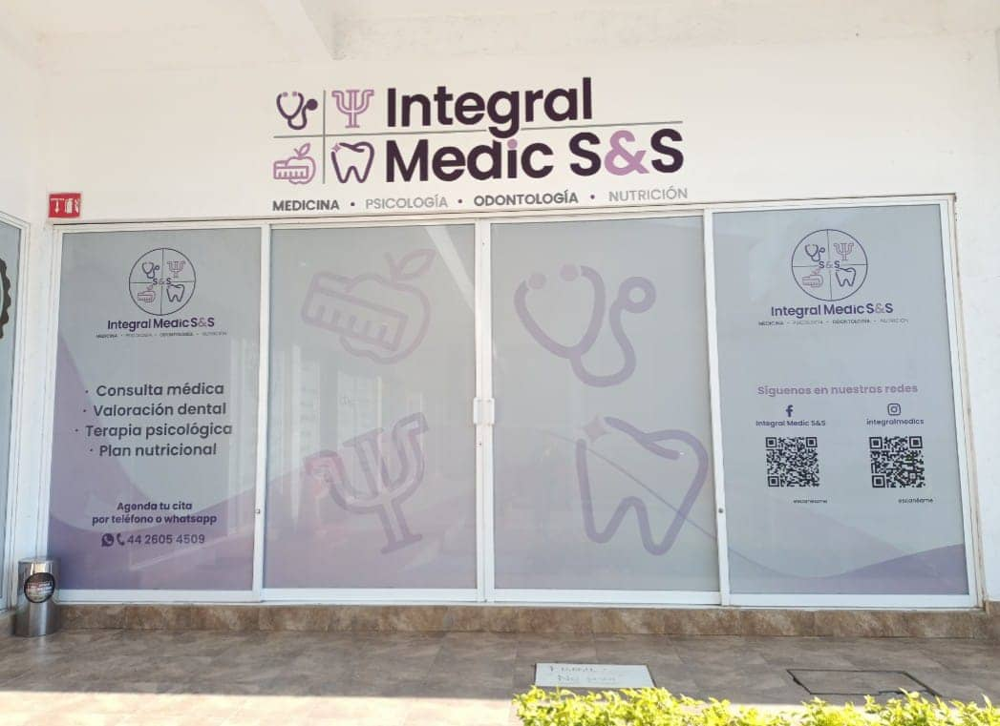
- 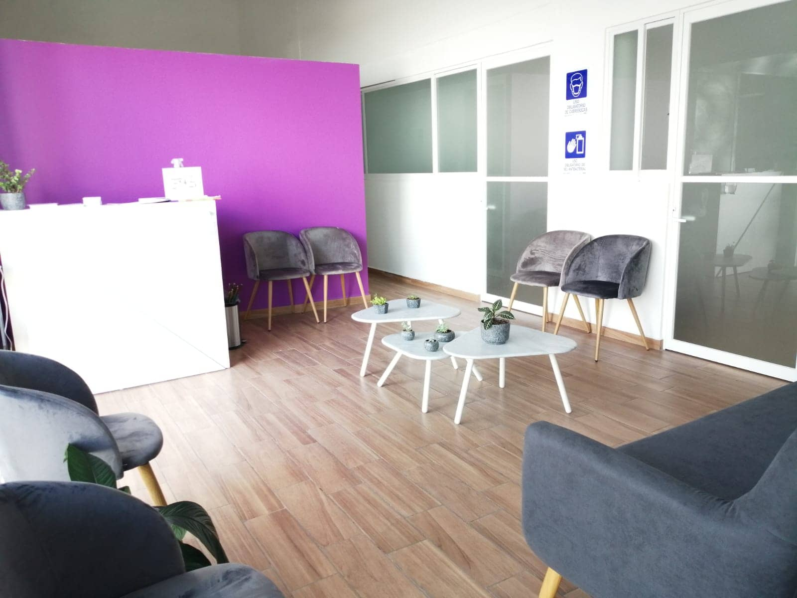
- 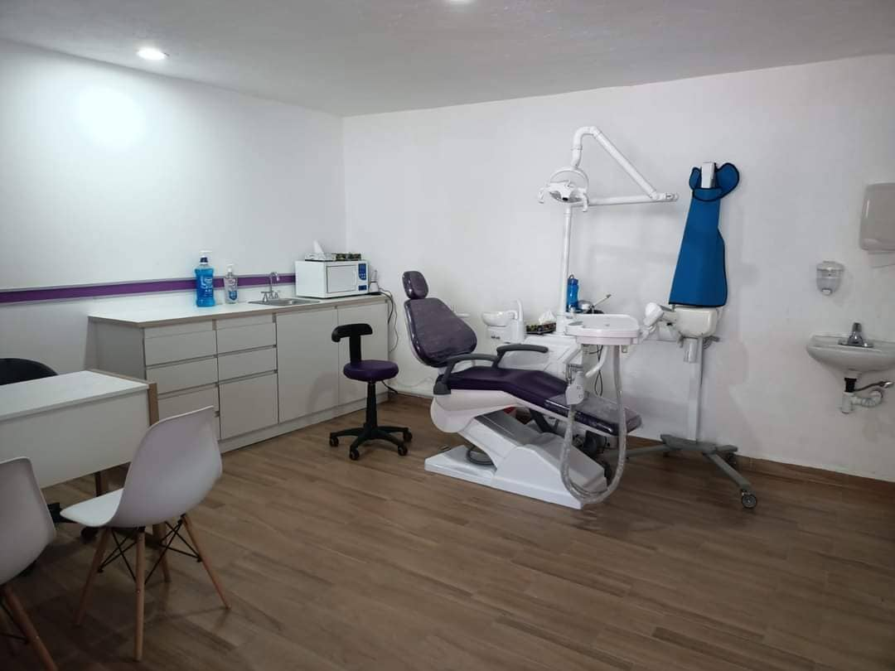
- 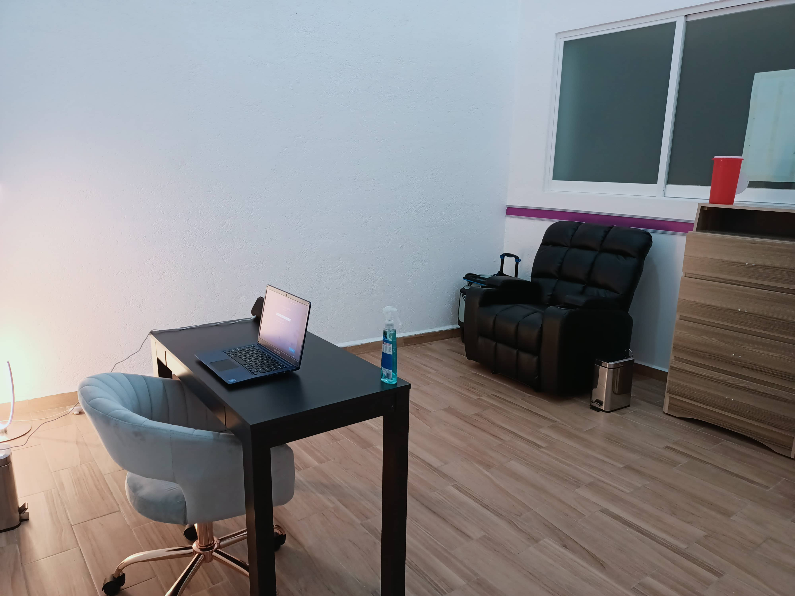
- 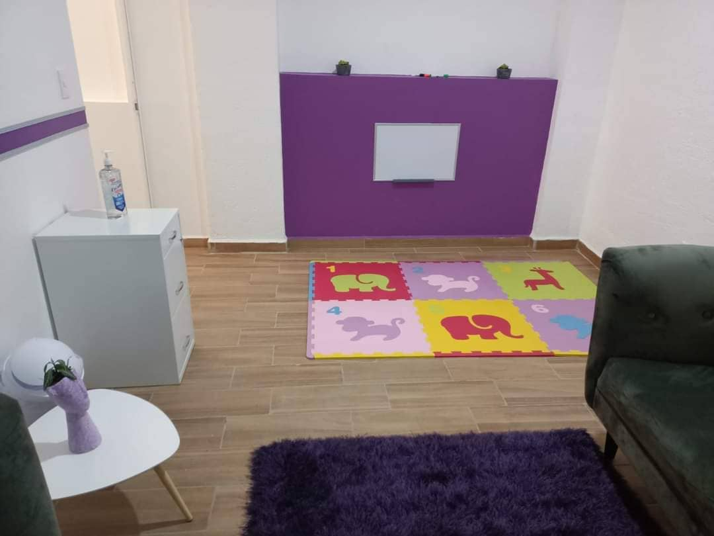
- 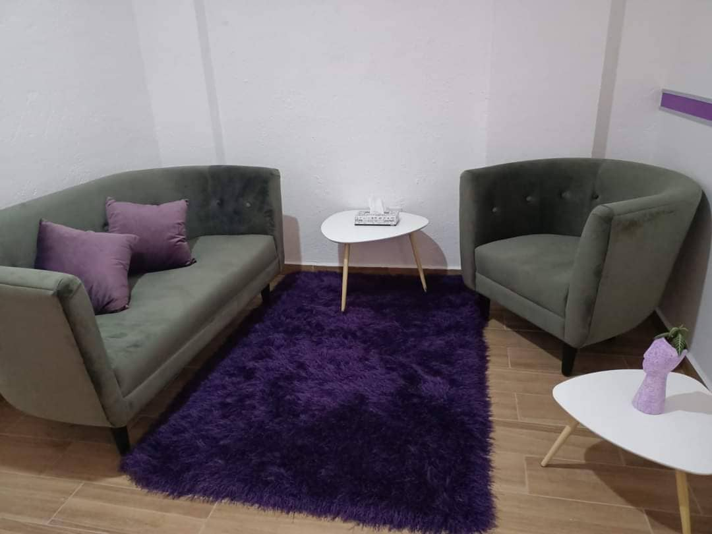
- 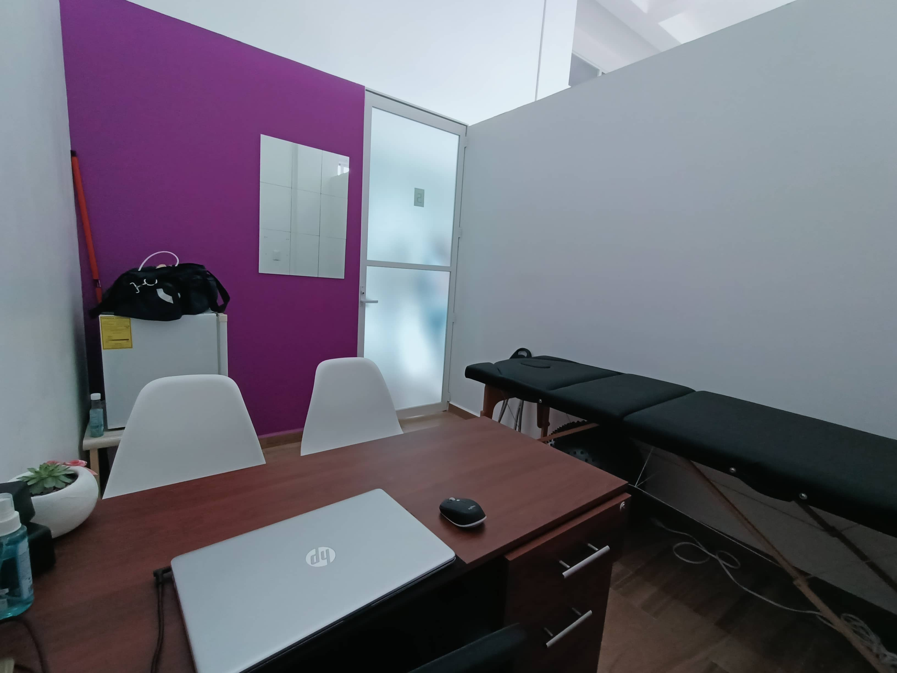
- 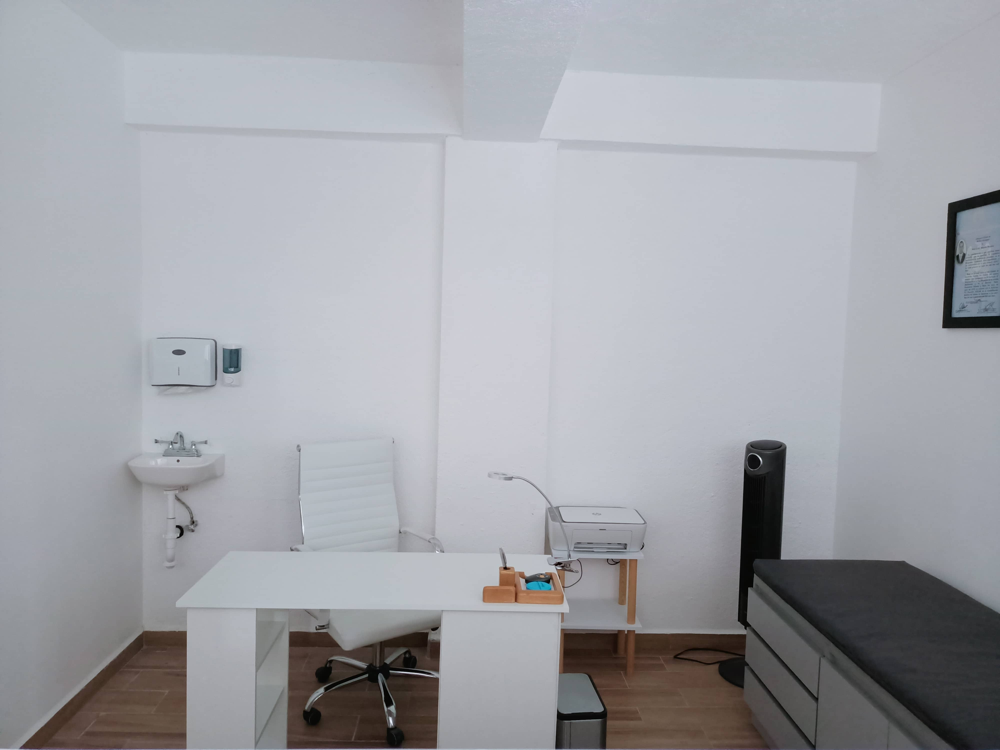
- 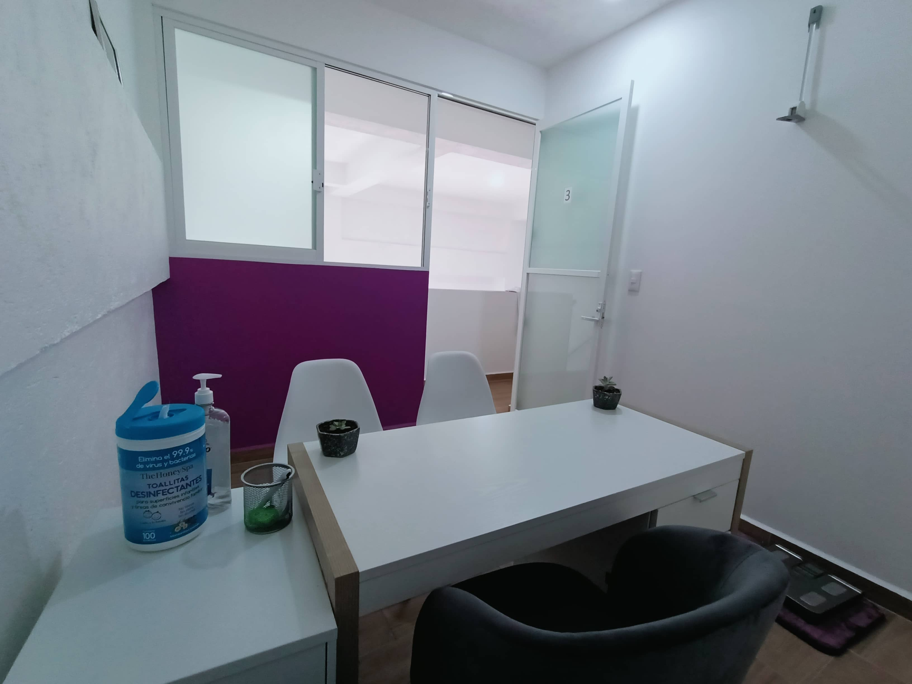
- 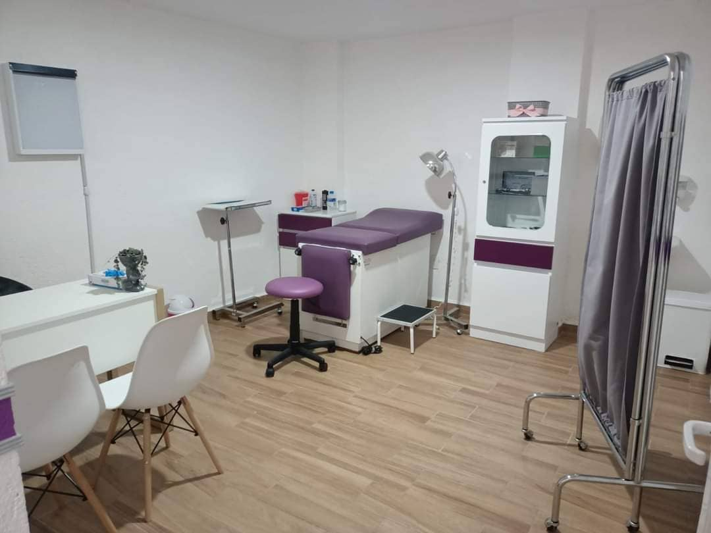
- 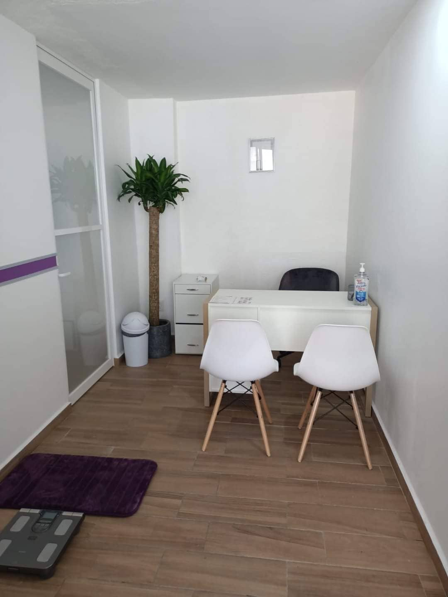
- 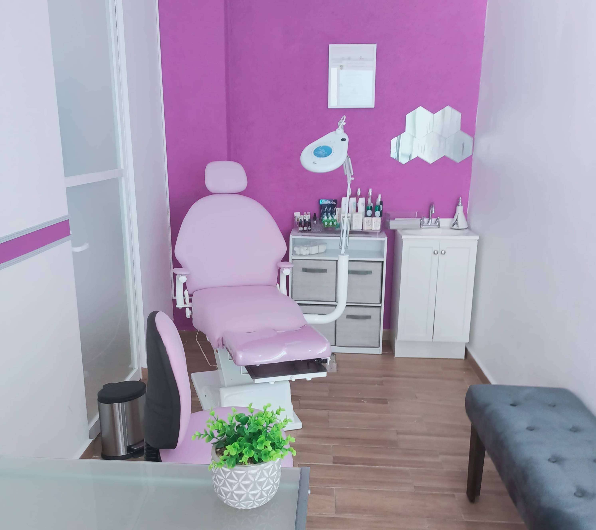